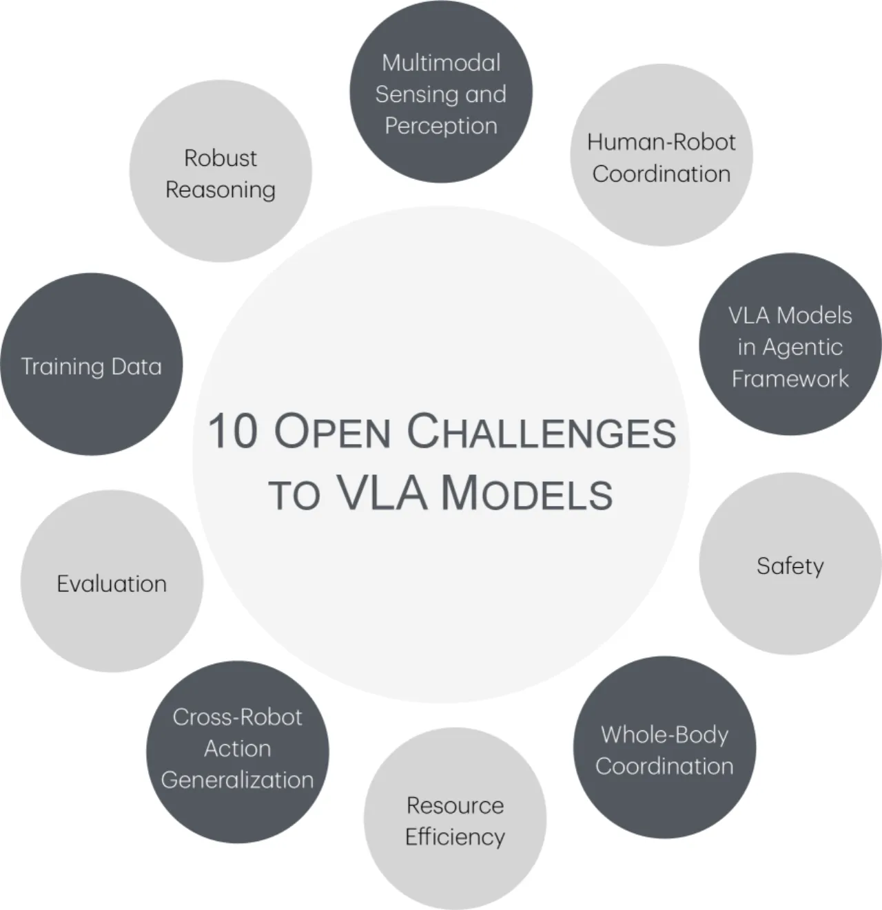
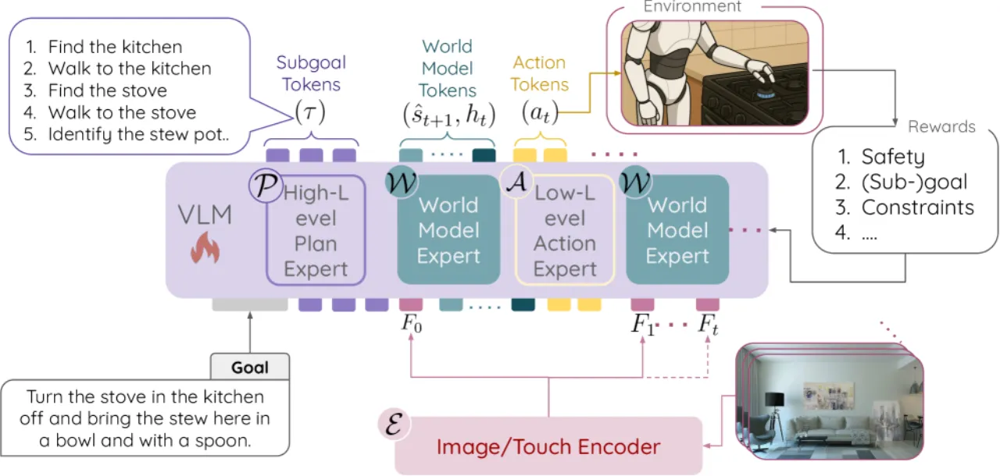

本文系统识别 Vision-Language-Action (VLA) 模型走向广泛部署前必须解决的十大开放性挑战，涵盖多模态感知、推理、数据质量、评估体系、跨机器人泛化、计算效率、全身协调、安全保障、智能体框架与人机协作，并探讨空间理解、世界模型、合成数据和后训练等新兴解决路径。
VLA 模型将视觉感知、语言理解与具身动作统一到单一架构中，被视为 Embodied AI 的核心基础。然而，从实验室演示到真实世界大规模部署，这类模型仍面临多维度的系统性挑战。现有工作分散在各个子领域，缺乏对全局挑战的整合视角。
"VLA models are central to the development of Embodied AI" — 这一判断驱动作者系统梳理十大开放问题，以期为未来研究指明方向。

VLA 模型分为两类：离散动作模型（将动作 token 化后通过 autoregressive 解码）与连续动作模型（直接回归连续控制信号）。前者推理速度慢，"making it unsuitable for" 高频控制场景；后者与大语言模型的推理能力结合难度更大。两类路径各有权衡，共同面临以下十大挑战。
作者逐一剖析每项挑战的技术本质、当前瓶颈与代表性工作，提供了一个系统性的问题地图。

主流 VLA 缺乏显式深度信息；仅靠帧差估计深度对物体大小、相机距离高度敏感。环境噪声（反射、镜头光晕、水尘遮挡）严重影响感知质量。触觉模态缺失导致精细力控任务无法完成："touch modality would allow VLA to perform delicate tasks that require careful application of force"。代表方法：MolmoAct、SpatialVLA（引入深度学习）；SimplerEval（分布漂移测试）。
LLM 的推理能力迁移到 VLA 后显著衰减——即便是抓取、放置、开抽屉等简单任务也存在较高错误率。长时程任务中错误率随 horizon 增加而累积："error rate on such simpler tasks must approach near perfection" 才能支撑复杂场景部署。工具理解与选择能力依然缺失。代表方法：Emma-X、CoT-VLA、MolmoAct；评估基准：LIBERO、SimplerEnv。
Open-X-Embodiment 整合了约 70 个数据集、超过 100 万条演示，但模型对分布外环境依然脆弱："VLA models are often brittle to out-of-distribution environments and robot setups"。Sim2Real 差距、具身差异、摄像头位置变化以及人工采集者的不一致性共同引入大量方差与噪声，新场景通常需要额外微调数据。
真实机器人、环境与物体资源稀缺，仿真评估与真实性能相关性差："environments simulated in such tools often fail to capture enough details of their real-life counterparts"。光照、反射、纹理、PD 参数（stiffness/damping）的失真都会导致"poor correlation between in-simulation and real-life performance"。SimplerEnv 通过随机化纹理、光照、相机位姿等改善评估可靠性，但 sim-to-real gap 根本问题仍未解决。
不同机器人平台的动作空间异质性使零样本迁移极为困难："training on action data from a fixed set of embodiments often fails to generalize to others"。自由度数量、结构差异（机械臂 vs. 四足机器人 vs. 自动驾驶车辆）以及控制接口多样性，使统一动作表征成为关键难题。Zheng 等（2025）对通用动作泛化问题进行了系统研究。
机器人平台存在空间与能量约束；灾难现场等断网环境无法依赖云推理："disaster zones are often cutoff from the internet and telecommunication services"。小模型性能显著落后于大模型，但大模型的在端部署成本难以承受。"striking the right balance between VLA model capacity and resource efficiency remains key"。代表系统：OCTO (2023)、OpenVLA、RT-2、MolmoAct。
移动操作要求在运动中同步控制底盘与末端执行器，动作空间高维耦合是核心难题："dominant challenge is the high-dimensional search space of coupled actions"。基于模型的控制（MPC）面临实时性瓶颈；基于学习的控制存在探索难度大、credit assignment 困难、以及安全保障弱的问题。代表系统：Mobile ALOHA、UMI on Legs、ACDIT、WBMPC。
具身 AI 的错误动作可能直接造成人身或财产伤害："robot equipped with embodied AI may harm the victims while saving them due to imperfect actions"。在无人监督的复杂场景（如灾难救援）中，安全护栏的设计尤为关键。当前代表工作 SafeVLA 采用 RL-based 安全对齐，但在性能与安全之间的权衡仍是开放问题。
VLA 模型嵌入多智能体系统的研究尚处早期：如何分配自主级别、如何通过智能体间通信实现分布式决策、以及如何生成可信赖且可验证的工作流程，均是未解问题。Yang 等（2025）提出了包含 LLM 规划器 + VLM 验证器 + VLA 执行器的异构智能体框架作为初步探索。
当前 VLA 模型的人机通信是单向的（人 → 机器人），机器人无法向人类传达意图或请求缺失信息。CoT-VLA 通过在动作解码前生成意图状态可视化输出，Emma-X 通过高层自然语言 rationale 作出初步探索。真正的双向交互——"reasoning traces and questions for the user seeking missing information"——仍是开放目标。
论文（作为综述/位置论文）不提供实验对比表格，而是系统梳理针对上述挑战的四类新兴技术路径，为未来研究提供参考。
针对多模态感知挑战，作者建议在 RGB-D 数据上微调 VLM backbone，以发展深度感知能力。具体方案包括：利用 Locate 3D 框架从 RGB 帧合成 RGB-D 数据；当真实深度不可用时，保留独立的深度估计专家网络；借助 Veo3 等视频生成平台构建多样化场景训练数据。
两类主要方法应对长时程推理挑战：
• 生成式建模：以当前状态与动作为条件预测下一状态，通过对比性"self-consistency"目标从预训练 VLM 初始化训练。
• 嵌入预测：V-JEPA-2 方法预测"latent embedding of the future frame"而非像素级重建，实现高效的长时程预测，同时避免像素生成的计算代价。
针对跨机器人泛化挑战，作者提议学习"unified atomic representations of actions"——通过 codebook 建立原子动作库，配合机器人专属 decoder 实现适配。进一步的愿景是通过 prompting 教会 VLA 模型新动作空间，类比 few-shot prompting 在 LLM 中的能力，从而突破固定动作空间的限制。
• 数据合成：从视频中提取 latent action 实现无监督数据扩增；联合训练合成视频与真实机器人数据；将世界模型作为模拟器生成大规模合成数据集，并用专门评估器过滤低质量样本。
• 后训练：将 LLM 后训练技术移植到 VLA——以动作条件化世界模型的预测与子目标状态的对比作为奖励信号，结合 DPO、GRPO 等偏好优化方法；安全评估通过"action-conditioned world models or specialized evaluators"充当"virtual guardrails"。
| 挑战 | 主要新兴解决路径 | 代表方法 |
|---|---|---|
| 多模态感知 | RGB-D 微调、深度专家 | Locate 3D, SpatialVLA, MolmoAct |
| 鲁棒推理 | Chain-of-Thought、世界模型奖励 | CoT-VLA, Emma-X, V-JEPA-2 |
| 数据质量 | 视频 latent action 提取、合成数据 | Veo3, Open-X-Embodiment |
| 跨机器人泛化 | 通用动作 Codebook + 专属 Decoder | Zheng et al. (2025) |
| 资源效率 | 分层规划（大模型规划 + 小模型执行） | OCTO, OpenVLA, RT-2 |
| 全身协调 | 耦合奖励设计、MPC+学习混合 | Mobile ALOHA, WBMPC, ACDIT |
| 安全 | RL 安全对齐、世界模型虚拟护栏 | SafeVLA |
| 智能体框架 | 异构多智能体（规划+验证+执行） | Yang et al. (2025) |
| 人机协作 | 双向通信、推理轨迹可视化 | CoT-VLA, Emma-X |
论文明确指出，当前仿真评估环境"often fail to capture enough details of their real-life counterparts"，sim-to-real gap 导致评估结论的可靠性存疑。SimplerEnv 等工具通过随机化改善了部分问题，但根本性 gap 仍未弥合。
作为 Position Paper，论文对十大挑战的描述主要依赖定性分析与引文综述，缺乏统一的定量实验验证。各挑战的严重程度难以横向比较，优先级排序带有主观判断成分。
文中提出的四类新兴解决路径（空间理解、世界动力学建模、通用动作表征、数据合成与后训练）多处于概念或早期探索阶段，部分方法（如基于 prompting 的动作空间扩展）尚无充分实证支持，实际效果有待后续工作检验。
"10 大挑战"的选取不可避免地带有作者视角的局限。例如，标定误差、感知延迟、硬件可靠性等工程层面挑战，以及多语言/跨文化人机交互等社会技术挑战，在论文中未得到充分讨论。